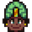
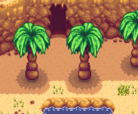
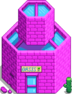
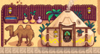
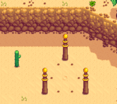
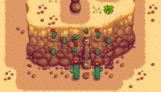
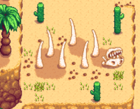
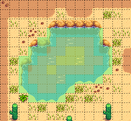

The Desert
| The Desert | |
 | |
| Occupants: |  Desert Trader |
The Calico Desert is an exterior map region located far to the northwest of Pelican Town. The weather here is always sunny and the seasons are all the same.
The desert is inaccessible until the Bus at the Bus Stop has been repaired by completing the Vault Bundles at the Community Center or by purchasing "Bus Repair" for  40,000g from the Joja Community Development Form. The Desert Festival is held annually from Spring 15th to 17th.
40,000g from the Joja Community Development Form. The Desert Festival is held annually from Spring 15th to 17th.
Features
| Image | Name | Description |
|---|---|---|
 |
Skull Cavern | The entrance to Skull Cavern is located in the northwest corner of the Desert. The Skull Key can be used to open the door inside the cavern. |
 |
Oasis | The Oasis is a store located in the southwest section of the area. It is run by Sandy and sells a number of seeds not available in Pelican Town, along with an additional item that depends on the day of the week.
|
 |
Desert Trader | The Desert Trader's tent is located in the east of the map. |
 |
Three Pillars | Three pillars are found in the northeast part of the Desert; this location is tied to one of the game's Secrets. |
 |
Warp Statue | The player can warp to the desert using a Warp Totem: Desert or a Desert Obelisk. Both methods warp the player to the same warp statue, located south of the Desert Trader. The Bus also appears in the Desert whenever the player warps, allowing the player to ride back in the bus as usual. |
 |
Sand Dragon | On top of a hill located directly north of the Oasis, are the large bones of a sand dragon. While standing near the skull of the creature, it can be interacted with, resulting in text that says: "Its maw gapes at the desert sun. Even in death, it yearns for a taste." It is related to the Mr. Qi questline; note that this feature is not available on Spring 15-17 due to the Desert Festival. |
Foraging
The same forageable items are found in the Desert year-round:[1]
 Coconut (50%) and
Coconut (50%) and  Cactus Fruit (50%)
Cactus Fruit (50%)
Forageable items spawn at an average rate of 2.0 per night year-round.[2] The map shows the possible locations as red and magenta tiles; when the original trees are present, the magenta tiles have a 90% smaller chance of spawning items because they are identified as being behind the original trees.
The original trees found in the Desert are all Palm Trees. They can be chopped down. They do not drop seeds, but may occasionally drop a Coconut when chopped down or shaken. They cannot be tapped.
In addition, regular trees (Maple, Oak, Pine, and Mahogany) can all be planted throughout the Desert. Unlike in the main valley, trees planted in the Oasis will grow during Winter even without Tree Fertilizer.
Artifacts
Artifacts that can be found by digging up Artifact Spots in the Desert are:
 Palm Fossil (7%)
Palm Fossil (7%) Golden Relic (6%)
Golden Relic (6%) Golden Mask (3%)
Golden Mask (3%)
Other possible items are:
- 1-3
 Clay (48%)
Clay (48%)  Lost Book (20%); once all Lost Books have been found, any potential Lost Book is replaced by
Lost Book (20%); once all Lost Books have been found, any potential Lost Book is replaced by  Mixed Seeds.
Mixed Seeds.- 1-3
 Stone (16%)
Stone (16%) - An unseen
 Secret Note: up to 4% chance, only if the player has a Magnifying Glass.
Secret Note: up to 4% chance, only if the player has a Magnifying Glass.
Note that Snow Yams, Winter Roots, and Rice Shoots are never found in the Desert.
Artifact spots spawn at an average rate of 1.0 per night, except in winter when the average rate increases to 1.4 per night.[3]
Fishing

The primary location for fishing in the Desert is the pond in the northwest section. The player can catch two unique fish here, namely the Sandfish and Scorpion Carp. The Sandfish is needed for the  Specialty Fish Bundle in the Fish Tank.
Specialty Fish Bundle in the Fish Tank.
It's also possible to fish in the pool of water on the southern edge of the map, if the player's Fishing skill is high enough for the bobber to reach the water. However, the fish quality will always be minimal in the southern pond, as the distance from land is 0 for the entire pond. [4] The Pyramid Decal can be fished here (10% chance).
| Time | |||||||||||||||||||||
|---|---|---|---|---|---|---|---|---|---|---|---|---|---|---|---|---|---|---|---|---|---|
| 6 | 7 | 8 | 9 | 10 | 11 | 12 | 1 | 2 | 3 | 4 | 5 | 6 | 7 | 8 | 9 | 10 | 11 | 12 | 1 | ||
References
- ↑ For each forage item, the provided percentage is the average percentage of all forage items that will be the specified item for that season. The input data is Locations.xnb, which is processed by code in GameLocation::spawnObjects.
- ↑ Of the 3000 total tiles in the Desert, 923 (31%) are valid spawn locations for standard forage items. For more information on forage item spawning, see Foraging.
- ↑ Of the 3000 total tiles in the Desert, 1229 (41%) are valid spawn locations for artifact spots year-round. Even though the artifact spot locations are the same in winter as the rest of the year, the spawn rate is higher in winter because chanceForNewArtifactAttempt in GameLocation:spawnObjects is higher in winter. See Artifact Spot for more information.
- ↑ The water tiles in the south pond are handled more like a fountain: the information is stored in the map's Building layer instead of the Back layer. Fishing is allowed, based on the Building data, but all distance-from-land calculations consider the tile to be a land tile, therefore the distance from land is set to zero.
History
- 1.0: Introduced.
- 1.07: Fixed issue regarding Snow Yams appearing in the Desert.
- 1.4: Desert Trader added. Fixed bug where Snow Yams and Winter Roots could be dug up in Winter. Various visual fixes.
- 1.4.1: Now only one Magic Rock Candy can be purchased each Thursday from the Desert Trader.
- 1.4.4: Fixed issue where Crab Pots placed in the desert pond were rendered incorrectly. Objects can no longer be placed on top of the Desert Trader.
- 1.5: Pyramid Decal can now be caught when fishing in the southern pond.
- 1.5.4: Palm trees can no longer produce Golden Coconuts.
- 1.6: Desert Festival introduced. Trees planted in the Desert will now grow during Winter without Tree Fertilizer.
| Locations | |
|---|---|
| Locations | Backwoods • Beach • Bus Stop • Calico Desert • Cindersap Forest • Farm • Farm Cave • Farm Pond • Graveyard • Ginger Island • Mastery Cave • Minecart • Mines • Mountain • Mutant Bug Lair • Pelican Town • Quarry • Quarry Mine • Railroad • Secret Woods • Sewers • Skull Cavern • Summit • Tunnel • Volcano Dungeon • Witch's Swamp |